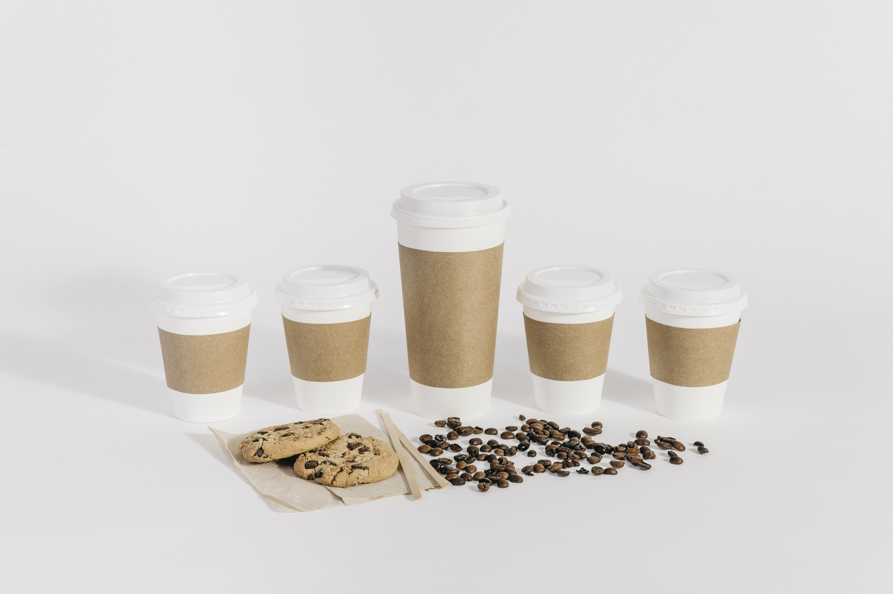

Nuestros Productos y Servicios
En nuestra Cafetería Ecológica, ofrecemos una variedad de productos orgánicos y sostenibles, desde café de comercio justo hasta snacks saludables y postres veganos. Nuestro compromiso es brindar una experiencia que respete el medio ambiente y promueva un estilo de vida saludable.
- Café orgánico de alta calidad
- Infusiones naturales y tés ecológicos
- Postres veganos y sin gluten
- Eventos y talleres sobre sostenibilidad

Además, contamos con un espacio acogedor para que disfrutes de tu bebida favorita mientras aprendes sobre prácticas ecológicas y sostenibles.